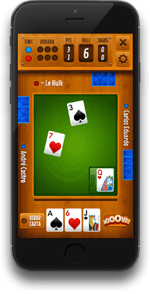

Desenvolvimento de apps híbridos com cordova
Dinâmica em tempo real
Henrique Moreira (@onrizon / @gartic)
- Fundada em 2012
- Backend em Node.js
- Tecnologias: Grunt, Jade, Stylus, Socket.io
- Apps desenvolvidos em cordova para iOS, Android, WP8 e Firefox OS
BuracoON
- Lançado em março de 2012
- Primeiro jogo de buraco online para smartphones
- 70% do publico italiano
- Web, iOS, Android, WP8 e Firefox OS
- Mais de 1 milhão de downloads
- Mais de 250 mil cadastros
TrucoON

- Lançado em agosto de 2012
- Jogo número 1 de truco no iOS
- iOS, Android, WP8 e Firefox OS
- Mais de 150 mil cadastros
- Fundada em 2008
- Backend em PHP
- Média de 70 mil visitas diárias
- Mais de 2 milhões de pageviews por mês
- Um milhão de cadastros
Gartic App
- Aplicativo lançado em dezembro de 2013
- Plataformas: Android, iOS, WP8 e Firefox OS
- Mais de 1 milhão de downloads
Cordova

- Criado pela Nitobi em 2009 (Phonegap)
- Aquisição pela Adobe em 2011
- Integrado ao Apache como Apache Callback em 2011
- Apache Cordova
Instalação
#Instalando o cordova globalmente via NPM
npm install -g cordova
#Criando o projeto
cordova create diretorio com.gartic.Gartic NomeDoApp
Inclusão de plataformas
Criando as estruturas para cada plataforma
#Acessando o diretorio do projeto criado
cd diretorio
#Adicionando plataformas de desenvolvimento
cordova platform add ios
cordova platform add android@4.0.0
cordova platform add wp8
cordova platform add browser
#Listando plataformas
cordova platform ls
Antes de utilizar uma plataforma, instalar o respectivo SDK:
http://cordova.apache.org/docs/en/5.0.0/guide_platforms_index.md.html#Platform%20Guides
Execução
#Compilar o projeto
cordova build ios
#Emular o projeto em simuladores
cordova emulate android
cordova emulate ios --target=iPhone-6
#Executar o projeto no dispositivo
cordova run wp8
cordova run ios --device
Depuração
- Android: Chrome (via chrome://inspect/)
- iOS: Menu Desenvolvedor no Safari
- WP8: Weire (Apache) ou (Microsoft)
Configuração
- Estrutura do projeto em www
- Inclusão do cordova.js e capturar evento deviceready
<script src="cordova.js"></script> - Detalhamento comportamental no config.xml
<!-- Forçando o app a utilizar a tela inteira -->
<preference name="Fullscreen" value="true" />
<!-- Indicando a orientação a ser utilizada -->
<preference name="Orientation" value="portrait" />
http://cordova.apache.org/docs/en/5.0.0/config_ref_index.md.html#The%20config.xml%20File
Plugins
- Funcionalidades extras para a comunicação com o dispositivo
- Baseado na plataforma do NPM (>= 5.0.0)
#Adicionando plugin
cordova plugin add cordova-plugin-media
#Listagem
cordova plugin ls
#Removendo plugin
cordova plugin rm cordova-plugin-media
Ferramentas
Livrarias externas
Códigos focados para uma funcionalidade especifica
Hammer.js
Controle de gestos
//Instancia um controlador para o tratamento dos gestos
//no elemento com id "dados"
new Hammer.Manager(document.getElementById('dados'),{
recognizers: [
[Hammer.Tap, { taps: 2, posThreshold: 20 }],
[Hammer.Press, { threshold: 50, time: 200 }],
[Hammer.Pinch],
[Hammer.Swipe]
]
})
//Tratando o evento tap
.on('tap', function(e) {
});
Socket.io
Comunicação via websockets com tratamento crossbrowser
Servidor:
//Criando servidor http e associoando ao socket.io
var serv = require('http').createServer();
var io = require('socket.io')(serv);
//Abrindo uma porta para conexao
serv.listen(6969);
io.on('connection', function(socket){
socket.on('disconnect', function(msg){
});
socket.on('ping', function(msg){
socket.emit('ping',msg);
});
});
Socket.io
Cliente
<script src="http://localhost:6969/socket.io/socket.io.js"></script>
<script>
var socket = io('http://localhost:6969');
socket.on('connect',function() {
//conectado
});
socket.on('disconnect',function() {
//desconectado
});
socket.on('ping',function(msg) {
alert(msg.val);
});
socket.emit('ping',{ val: 'Teste' });
</script>
Reveal.js
Plataforma para apresentação de slides utilizando HTML, CSS e JavaScript
API
Reveal.slide( indexh, indexv, indexf );
Reveal.left();
Reveal.right();
Reveal.up();
Reveal.down();
Reveal.toggleOverview();
HTML5
- Vibration
- Canvas
- Device Orientation
- Websockets
- WebRTC
- CSS transitions/animations
- Media Queries
Device Orientation
Capturando evento
var a, b, g;
function callback(event) {
a = event.alpha;
b = event.beta;
g = event.gamma;
}
window.addEventListener("deviceorientation", callback, false);